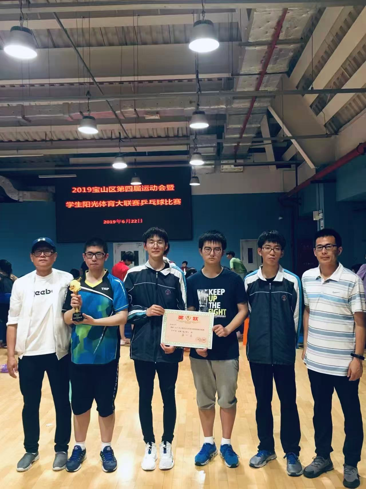
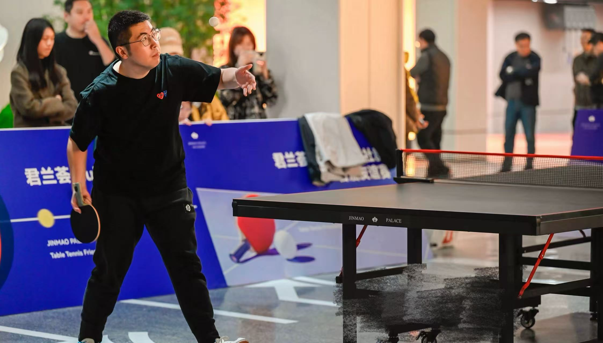
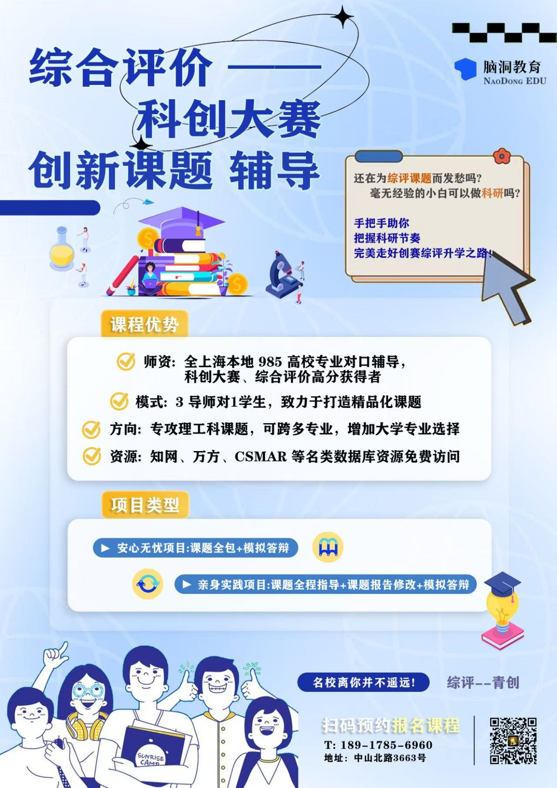
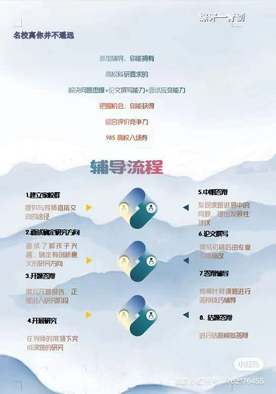

I am a second-year M.Sc. student in the Software Engineering Institute at East China Normal University (ECNU), advised by Prof. Xiaohong Chen. I work closely with Prof. Zhi Jin (Peking University) and Prof. Ming Hu (Peking University). My research focuses on applying large language models to requirements engineering, particularly on business-logic-driven requirements auto-completion for information systems and security requirements completion.
East China Normal University, Software Engineering Institute
Advisor: Prof. Xiaohong Chen | Close Collaborators: Prof. Zhi Jin, Prof. Ming Hu (Peking University)
East China Normal University, Software Engineering Institute
Unlocking the Silent Needs: Business-Logic-Driven Iterative Requirements Auto-completion
Proceedings of the International Conference on Software Engineering (ICSE), 2026 — Accepted
基于大模型的用户需求自动补全软件
Registration No. 2025SR2104128
National Scholarship
Awarded by the Ministry of Education of China


Served as team captain of Xingzhi Middle School table tennis team; registered athlete since 2009.


Founded an education venture focusing on high school students' comprehensive evaluation and research project mentoring in Shanghai. Find us on Xiaohongshu (小红书) by searching "上海脑洞教育" (or "脑洞教育").
Most students gained admission to Shanghai's top 985/211 universities through the comprehensive evaluation pathway.